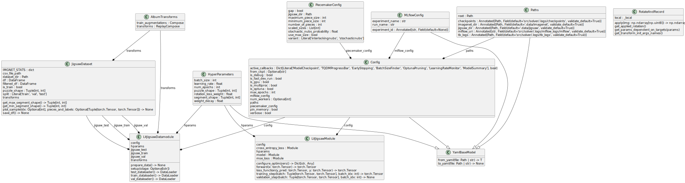
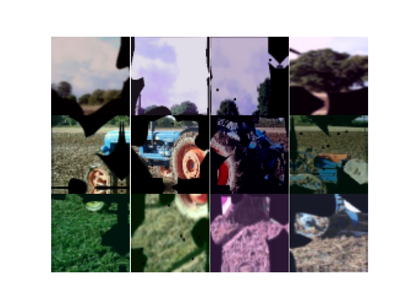
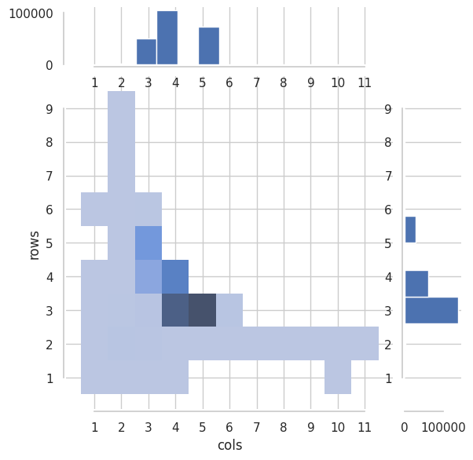

PATCH-Net (Puzzle Assembly by Transformer and CNN Hybrid Network) utilizes a pre-trained CNN backbone for feature extraction, an optional method for dimensionality reduction of the CNNs latent space, and a subsequent Transformer architecture with 2D/3D Learnable Fourier Features for spatial encoding. The model predicts the position and orientation of puzzle pieces, with three classification heads.
piecemaker for jigsaw puzzle generation, and the data structure of the original and puzzle-ized dataset.
$$ (x, y,\varphi), \quad \text{where } x \in {0, \ldots, N-1}, y \in {0, \ldots, M-1}, \varphi \in {k\cdot90|k \in{0,\ldots,3}} $$
nn.Linear) for predicting the location and orientation of puzzle pieces. Handling varying numbers of puzzle pieces is a future consideration.$$ \mathcal{L}{\text{total }} = | \mathbf{Y}{:,:,:2} - \mathbf{\hat{Y}}{:,:,:2} |F^2 + \eta \mathcal{L}{\text{CE}}(\mathbf{Y}{:,:,2}, \mathbf{\hat{Y}}_{:,:,2}) $$ where $\eta \in \mathbb{R}^+$ is a hyperparameter.

location of the submodule
find further information (installation, usage, ...) in DATA-PIECEMAKER.md
Data Augmentation: Albumentations
DL-Framework: PyTorch Lightning
piecemaker.len(jigsaw_dataset) = 231653Loc_<split>_solution.csv files. Meaning: first line --> first sampleHDF5 or Parquet.ResNetEfficientNetV2
from dl_solver import Config, JigsawDataset
from data_handling import ImageNetParser
imagenet_parser = ImageNetParser(config=Config(is_multiproc=True))
imagenet_parser.read_solution_csv(split="train").pipe(
lambda df: imagenet_parser.to_jigsaw(df=df, split="train")
).sample(N).pipe(lambda df: df.sample(1000))
# Run Data Cleaning (if something went wrong!)
dataset = JigsawDataset(dataset_dir=config.paths.jigsaw_dir, split='train', puzzle_shape=(None, None), transforms=None)
ds._refurb_df(is_save_df=True)
>>> ds.df.head()
| image_id | class_id | cols | height | max_height | max_width | min_height | min_width | num_sample | piece_count | rows | stochastic_nub | width | |
|---|---|---|---|---|---|---|---|---|---|---|---|---|---|
| 0 | n01440764_10040 | n01440764 | 4 | 375 | 169 | 178 | 169 | 161 | 10040 | 12 | 3 | True | 500 |
| 1 | n01440764_10048 | n01440764 | 4 | 300 | 158 | 166 | 104 | 106 | 10048 | 12 | 3 | False | 400 |
| 2 | n01440764_1009 | n01440764 | 4 | 375 | 175 | 198 | 175 | 137 | 1009 | 12 | 3 | True | 500 |
| 3 | n01440764_10293 | n01440764 | 4 | 375 | 200 | 202 | 169 | 135 | 10293 | 12 | 3 | True | 500 |
| 4 | n01440764_10342 | n01440764 | 6 | 234 | 114 | 122 | 97 | 87 | 10342 | 18 | 3 | True | 500 |
>>> ds.plot_sample()

Distribution of Rows & Cols in the Dataset:

sudo apt-get -y install libspatialindex6
sudo apt-get -y install optipng
sudo apt-get -y install potrace
% activate conda / python environment
cd lib/piecemaker
pip install --upgrade --upgrade-strategy eager -e .
index.json: This file contains metadata about the puzzle, such as the total number of pieces, the puzzle's height and width, and the size of each piece.
piece_cut_variant: The style of the puzzle piece cuts.full_size: The full size of the puzzle.sizes: An array of sizes for the puzzle.sides: An array of sides for the puzzle.piece_count: The total number of pieces in the puzzle.image_author: The author of the image used to generate the puzzle.image_link: The link to the image used to generate the puzzle.image_title: The title of the image used to generate the puzzle.image_description: The description of the image used to generate the puzzle.image_width: The width of the image used to generate the puzzle.image_height: The height of the image used to generate the puzzle.outline_bbox: The bounding box of the puzzle outline.puzzle_author: The author of the puzzle.puzzle_link: The link to the puzzle.table_width: The width of the table on which the puzzle is displayed.table_height: The height of the table on which the puzzle is displayed.piece_properties: An array of objects, each representing a puzzle piece. Each object has the following properties:
id: The ID of the piece.x and y: The x and y coordinates of the piece on the table.ox and oy: The original x and y coordinates of the piece in the image.r: The rotation of the piece.s: The scale of the piece.w and h: The width and height of the piece.rotate: The rotation of the piece.g: The group of the piece.adjacent.json: This file contains information about which pieces are adjacent to each other in the original image.
size-100/: This directory contains data for the puzzle pieces when the puzzle size is set to 100.
pieces.json: This file contains information about each piece, including its row and column index in the original image, its rotation (in degrees), and its height and width.
sprite_with_padding_layout.json and sprite_without_padding_layout.json: These files contain information about how the pieces are laid out in the sprite image.
masks.json and piece_id_to_mask.json: These files contain information about the masks used to extract each piece from the original image.
data_uri/: This directory contains Base64 encoded images of each piece.
mask: Contains the unique masks as bmp files.
raster: Contains the N segemented pieces of the Jigsaw puzzle as jpg files.
raster_with_padding: Contains the N segemented pieces of the Jigsaw puzzle as jpg files with padding to rectangular shape.
can be found here
LOC_synset_mapping.txt file. Each line in this file likely contains a class ID and its corresponding label. Example lines:n01440764 tench, Tinca tinca
n01443537 goldfish, Carassius auratus
n01484850 great white shark, white shark, man-eater, man-eating shark, Carcharodon carcharias
train, val & test set images are located in .data/imagenet/ILSVRC/Data/CLS-LOC/<split>.
train-folder: Contains the images in subfolders named after the class labels. For example, the first directory is n01440764, and contains images of tench fish. The labels are also provided via .data/imagenet/LOC_train_solution.csv - same format as the validation set.val-folder: Contains the images directly as ILSVRC2012_val_<id>.JPEG. The labels are located in .data/imagenet/LOC_val_solution.csv and look like this:ImageID , PredictionString
ILSVRC2012_val_00008726,n02119789 255 142 454 329 n02119789 44 21 322 295
<class id><BBX > <class id><BBX >
test-folder: Containes the images directly as ILSVRC2012_test_<id>.JPEGConsideration:
Loc_<split>_solution.csv files. Meaning: first line --> first sampleHDF5 or Parquet.